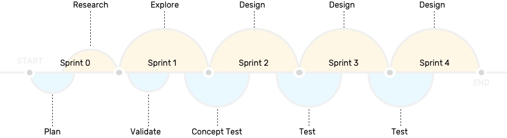
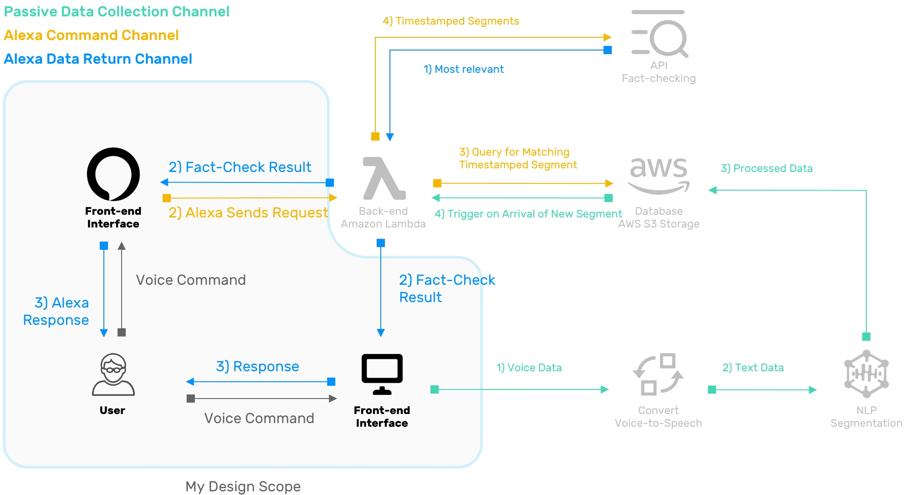
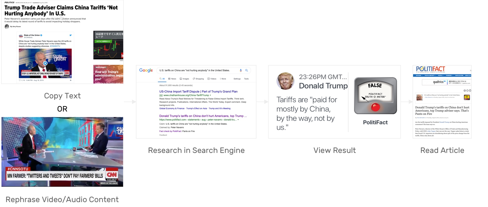
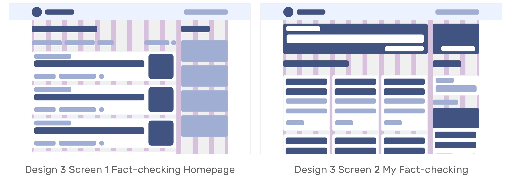

Overview
This was a project driven by Knight lab at Medill School of Journalism, to work on experiments designed to push journalism into new spaces.
Project Brief
Fact-checking is difficult and time-consuming for journalists, which creates a significant gap between the moment a politician makes a statement and when the fact-check is ultimately published.
—The Quest to Automate Fact-Checking. Proceedings of the 2015 Computation + Journalism Symposium.
The Challenge
The challenge is to provide immediate access to the facts in real or semi-real time.
The Goal
The mission of Automated Fact-checking project at Knight Lab is to provide factual verification of the news as it is presented that supports further questions about the context (history, alternative points of view, evidence, etc.) of a news story and/or quote based on AI and Voice Recognition when people are watching video.
The Outcome
The expected outcome of design is an interface that allows this technical solution to have lower learning cost, more accessible for people who don't have habit of reading news, when they want to know whether their judgement have been diased.

Process
This project was based on Agile software development and project management that reqiures us to build and test the core function first.  As the studio plan and product management, we seperate this 10 weeks to 5 two-weeks sprint and each focused on one user scenario.
Sprint 0
Understand
Current Solutions
What are the current fact-checking solutions?
”Another limitation is the outdated natureof the fact-checkers’
publishing platforms."
"This limits how well they can be used in computational projects.“
—
The Quest to Automate Fact-Checking
1. Currently the main source of checked facts is editor's manual work.
2. There are some websites is distributing articles they got from editors.
3. Google and Microsoft is provide fact-checking features in their product.
Technical Plan
We set up a rough user scenario which would be the watching video behavior on laptop like on youtube.com for devs to development the back-end framework.
And I took responsibility of the user interface part which was expected to have a VUI and a software UI.
Sprint 1
How to design a VUI?
VUI Explorations
User's Actions | Before
User's Actions | After
Tortu VUI Prototype: https://tortu.io/prototype/afab57
Scenario #1
Sprint 2
Redefine And Extend
Interaction
Wait, but the true problem is...
User Research
To better understand video news audience's experience, expectations, pain points and also the flow of doing fact-checking, I conducted 5 indepth interviews with video audiences, 2 stakeholder interviews with the news generators and 1 contextual observation.
Why the current video fact-checking failed?
Journey Map | Current Check-in Flow and Pain Points
What do they want and desire?
Some key questions synthesized from interviews
Could I
See the news I did fact-checking previously?
Browse more checked news?
View the detailed information about the fact-checking result?
Run this only on CNN?
See the result instead of listening?
Share the result with friends or social media?
See the script while checking?
Customize my trigger words?
See how many fact-checking I accomplished so far?
Request a fact-checking?

Design Opportunies
An integrated experience for video fact-checking while watching video
Concept Testing

Testing Results and requriement gather
"Could it automatically running so that I don't need to turn it on each time."-Automatic mode?
"How could I interact with it? I think it should have a format like chatting box."-Chatting interface
"If it could give me some further information, like original article, other reading done by this editor or else, it's would make this process more comprehensive. "-Related readings?
Google chrome interaction design
Scenario #1 Mode 1 Active mode user flow
Scenario #2 Mode 2 user flow
Scenario #3 Mode 3 user flow
Test and Result

1. The "Query" and response should be in different patterns.
2. The checked "Query" should be saved.
3. It should be able to provide further readings.
Sprint 3
Chrome Extension UI design
Features Preview
Set-up
After installation, users are able to turn it on on a specific website like youtube.com or the video website they used.
Pros:
There are two buttons that indicate [history] and [view more news] on the top.
When turning off it, the active mode is also turned automatically.

Mode 1 & 2 Loading status
While open a new video and this site's active mode has been turned on, AFC automatically run.
Pros:
Users don't need to turn AFC on every time while they are watching a video.
Mode 3 VUI
When users say a query they want to check, AFC shows an interface as the medium to give results.
Pros:
It could provide real-time feedback.
Visual System Guideline
Sprint 4
Show and Record
Website Design
Based on design requirements and feedbacks from user testing, we decided to make a website to support some core features and provide surprising features.

Scenario #1 Find checked history and
Scenario #2 View more checked facts
Design Round 1 Early Ideas

Testing Result
1. Two scrollable columns is a bit hard and confusing to manipulate.
2. The function of each area is not very clear and intuitive.
Design 2 One-Pager

Testing Result
1. The left column only has two options but takes too much space which makes the right side less effective.
2. The overall feeling of this design is overwhelmed and condense.
Design 3 Listview
Testing Result
1. The overall feeling is clean and Neat.
2. The two columns have priority and easy to recognize.
News Card Design Exploration
News Card Frame and Layout
News cards
Test Result
1. Thumbnail on the right would be better and modern.
With Snippets
Design Decision
For the [Featured Posts], it's going to use the design with snippets since featured posts have high priority and need to be distinguished.
Hover and Save Motion Design
Final results
Benefits
This solution provide a base of AI fact-checking by collecting what are people really curious about.
The current challenges in using AI fact-checking for users is that, instead of finding claims to check, getting data to check claims these difficulties of implementing Automated fact-checking, user's action also have been hampered by confusion and low feasibility brought by voice interaction.
This solution allows users to have a storage of their checked news, editors could know what are the topics people like to check, and the AI database also could gather verification from real users in context.